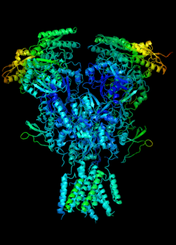

Using Machine Learning for Drug Discovery
Predicting drug affinity with genetic algorithms
About
- Jason Sommer
- Software engineer / consultant at Two Sigma
- github.com/jsdir
What is Drug Discovery and Development?
How does medicine work?
A true story from pharmacology
Inhibitory Drugs
| Drug | Target | Structure | Complex |
|---|---|---|---|
| Nevirapine | RT | ||
| Saquinavir | Protease |
Drug Discovery and Development
The process of bringing a drug from research to market.
- 1060 possible compounds in chemical space
- 10-year process
- $2.6 billion
- An expensive search problem
Drug Discovery
- Target Discovery
- Finding biological pathways
- Finding exploitable mechanisms in that pathway
- Developing an assay
- Target to Hit
- Finding molecules that alter the biological pathway
- High-Throughput Screening (HTS)
- Hit to Lead (H2L)
- Evaluating hits with limited optimization
- Lead Optimization (LO)
- Studying ADME (absorption, distribution, metabolism, and excretion)
- Studying toxicity
Target to Hit
Target to Hit - Screening
| + | + | + | + |
| = | = | = | = |
| -10.24 kCal/mol | -32.90 kCal/mol | -3.03 kCal/mol | -80.21 kCal/mol |
Search a set of compounds (ligands) for those most likely to bind to the receptor at a given binding site.
Solving the search problem with HTS
- Scientists can use robotics to screen hundreds of thousands of compounds
- High Throughput Screening (HTS)
- 384-well plates
- Compound libraries
Using Robots for HTS at NHS
$$$
Solving the search problem with ML
- Receptor structural information
- Binding site
- Ligand information
Receptor / binding site data from PDB @ rcsb.org
X-ray Crystallography
 Laue diffraction pattern collected at 14 ID using a tetrameric hemoglobin crystal from Scapharca Inequivalvis (courtesy of W. E. Royer, University of Massachusetts Medical School).
Laue diffraction pattern collected at 14 ID using a tetrameric hemoglobin crystal from Scapharca Inequivalvis (courtesy of W. E. Royer, University of Massachusetts Medical School).
3V81.pdb
... ATOM 15495 CG2 ILE D 393 25.671 -30.671 33.000 1.00 35.23 C ATOM 15496 CD1 ILE D 393 26.353 -27.753 33.542 1.00 31.16 C ATOM 15497 N GLN D 394 22.074 -29.425 33.020 1.00 43.01 N ATOM 15498 CA GLN D 394 21.126 -29.496 31.914 1.00 44.92 C ATOM 15499 C GLN D 394 21.924 -29.442 30.622 1.00 45.70 C ATOM 15500 O GLN D 394 22.885 -28.681 30.525 1.00 42.47 O ATOM 15501 CB GLN D 394 20.068 -28.385 31.997 1.00 47.62 C ATOM 15502 CG GLN D 394 18.615 -28.837 31.693 1.00 58.82 C ATOM 15503 CD GLN D 394 18.037 -29.911 32.674 1.00 67.94 C ATOM 15504 OE1 GLN D 394 18.086 -29.763 33.900 1.00 64.07 O ATOM 15505 NE2 GLN D 394 17.466 -30.983 32.112 1.00 78.85 N ATOM 15506 N LYS D 395 21.536 -30.264 29.644 1.00 46.90 N ATOM 15507 CA LYS D 395 22.294 -30.406 28.394 1.00 44.85 C ATOM 15508 C LYS D 395 22.666 -29.059 27.782 1.00 43.49 C ATOM 15509 O LYS D 395 23.785 -28.849 27.323 1.00 41.30 O ...
Ligand data from PubChem Compound @ NCBI
saquinavir.sdf
...
2.9061 -4.9077 0.0000 C 0 0 0 0 0 0 0 0 0 0 0 0
2.0000 -3.3522 0.0000 C 0 0 0 0 0 0 0 0 0 0 0 0
2.0000 -4.3938 0.0000 C 0 0 0 0 0 0 0 0 0 0 0 0
5.5386 3.4770 0.0000 H 0 0 0 0 0 0 0 0 0 0 0 0
5.5386 0.7770 0.0000 H 0 0 0 0 0 0 0 0 0 0 0 0
6.7966 3.6019 0.0000 H 0 0 0 0 0 0 0 0 0 0 0 0
5.9996 3.6019 0.0000 H 0 0 0 0 0 0 0 0 0 0 0 0
1 22 2 0 0 0 0
23 2 1 6 0 0 0
2 72 1 0 0 0 0
3 31 2 0 0 0 0
4 39 2 0 0 0 0
5 40 2 0 0 0 0
6 15 1 0 0 0 0
6 18 1 0 0 0 0
...
The revised search problem
Search a set of PubChem compounds for those most likely to bind to the receptor model at a given binding site.
- Virtual Screening (VS)
- Molecular Docking
Molecular Docking
How do we find the affinity for a complex?
Conformations
Representing the conformation
$$C_L = (x, y, z, q_w,q_x,q_y,q_z, t_1,t_2,\ldots,t_n)$$

$$energy(R, L, C_L) = E_{inter} + E_{intra}$$
- Intermolecular energy
- Energy between the ligand and the receptor
- Intramolecular energy
- Energy within the ligand
Intermolecular Energy
$$E_{inter} = \sum_{i \in L} \sum_{j \in R}\Bigg[E_{PLP}(r_{ij}) + 332.0\frac{q_i q_j}{{4r_{ij}}^2}\Bigg]$$
Bond energy

Piecewise Linear Potential
$$E_{PLP}(r_{ij})$$
Electrostatic Coulomb Interaction
$$332.0\frac{q_i q_j}{{4r_{ij}}^2}$$
Intramolecular energy
$$E_{intra} = \sum_{i < j \in L} E_{PLP}(r_{ij}) + \sum_{b}A[1-cos(m\theta - \theta_0)] + E_{clash}$$
Torsional Energy
$$\sum_{b}A[1-cos(m\theta - \theta_0)]$$
| $$\theta_0$$ | $$m$$ | $$A$$ | |
| $$sp^2-sp^3$$ | $$0.0$$ | $$6$$ | $$1.5$$ |
| $$sp^3-sp^3$$ | $$\pi$$ | $$3$$ | $$3.0$$ |
Hybridization
Hybridization
Clash Penalty
$$E_{clash} = \left\{\begin{array}{11} 1000 & : r_{ij} < 2\\ 0 & : r_{ij} \ge 2 \end{array} \right.$$
$$energy\big(R, L, (x, y, z, q_w,q_x,q_y,q_z, t_1,t_2,\ldots,t_n)\big)\\ = \sum_{i \in L} \sum_{j \in R}\Bigg[E_{PLP}(r_{ij}) + 332.0\frac{q_i q_j}{{4r_{ij}}^2}\Bigg] + \\\sum_{i < j \in L} E_{PLP}(r_{ij}) + \sum_{b}A[1-cos(m\theta - \theta_0)]\\ + E_{clash}$$
$$\min_{C \in S_C} energy(R, L, C)$$
Minimizing a multidimensional function
$$C_L = (x, y, z, q_w,q_x,q_y,q_z, t_1,t_2,\ldots,t_n)$$
- 7 + n dimensions
-
Saquinavir has 13 rotatable bonds
- 20-dimensional conformational space
Using Genetic Algorithms for optimization
GAs mimic biological natural selection by repeatedly modifying a population of individual solutions to produce a final generation of optimized solutions.
Initialize Population
$$C = (x, y, z, q_w,q_x,q_y,q_z, t_1,\\t_2,\ldots,t_n)$$
$$P = \{C_1, C_2, \ldots, C_n\}$$
Evaluate Energy
$$E_n = energy(R, L, P_n)$$
Generate Offspring
For each member of population:
Let $P_\alpha$, $P_\beta$, $P_\delta$ be random members of the population
Let $c$ be the genetic crossover
Let $s$ be the scaling factor
Let $r \in [0, 1]$ be a randomly generated value
Generate Offspring
$c=0.9, s=0.5$
| $x$ | $y$ | $z$ | $q_w$ | $q_x$ | $q_y$ | $q_z$ | $t_1$ | |
| $r$ | 0.51 | 0.96 | 0.32 | 0.36 | 0.25 | 0.50 | 0.38 | 0.34 |
| $P_i$ | 0.01 | 0.97 | 0.41 | 0.94 | 0.48 | 0.57 | 0.66 | 0.09 |
| $P_{\alpha}$ | 0.71 | 0.48 | 0.35 | 0.52 | 0.01 | 0.96 | 0.22 | 0.03 |
| $P_{\beta}$ | 0.52 | 0.01 | 0.96 | 0.13 | 0.99 | 0.66 | 0.16 | 0.79 |
| $P_{\delta}$ | 0.42 | 0.81 | 0.05 | 0.32 | 0.37 | 0.00 | 0.73 | 0.37 |
| $O_i$ | 0.61 | 0.97 | 0.78 | 0.26 | 0.14 | 1.29 | -0.43 | 0.06 |
Determine Fitness
$$E^o_i = energy(R, L, O_i)$$
$$ P_i = \left\{\begin{array}{11} O_i & : E^o_i < E_i\\ P_i & : E^o_i \ge E_i \end{array} \right. $$
Terminate?
Let $v$ be variance
$$\overline{E} - \min(E) < v$$
or if we have reached the iteration limit.
Avoiding local minima
- Sometimes genetic algorithms will converge on a suboptimal solution
- Multiple runs give us a greater chance of finding the global minimum
score: -199.62 kcal/mol score: -194.79 kcal/mol score: -192.91 kcal/mol score: -152.98 kcal/mol score: -146.35 kcal/mol score: -143.57 kcal/mol score: -139.40 kcal/mol score: -127.21 kcal/mol score: -74.22 kcal/mol score: -61.66 kcal/mol
Verifying results - RMSD
$$RMSD = \sqrt{\frac{1}{N}\sum_{i}^{i = N}\delta_i^2}$$
Verifying results
- 134 protein-ligand complexes in GOLD validation set
- Get the best scoring conformation for each complex
- Calculate $RMSD$
- If $RMSD < 2Å$, the prediction is correct
Verifying results
80% accuracy
Optimizing the optimizer
- 50 conformations $\times$ 3,000 iterations $\times$ 10 runs
- 1.5 million invocations of the energy function
- Each invocation of energy function calculates potentials for $RL$ bonds
- If $RL = 50000$, we call $$ E_{PLP}(r_{ij}) + 332.0\frac{q_i q_j}{{4r_{ij}}^2} $$ 75 billion times!
Limiting complexity
$$O\Bigg[n\Big(RL + \frac{L(L - 1)}{2} + b\Big)\Bigg]$$
$$O(nRL)$$
Gridmaps
$$O(nRL) \to O(RE + nL)$$
Performing a full screen
- It takes ~4 seconds to screen a normal-sized ligand
- Screening 100,000 ligands would take 4.5 days on a single core

Supercomputing with AWS
- Downloaded all 80 million PubChem ligands into S3
- Bundled the docking engine into a Docker container
- Used AWS Batch to run docking jobs
Simple web tool
Results
- 100,000 ligands in 15 minutes
Method Limitations
Protein Flexibility
Quantum Mechanical Effects
Water
Deep Learning for Drug Discovery
- Gnina - github.com/gnina/gnina
- arxiv.org/abs/1612.02751
- Uses CNNs for scoring complexes
Quantum Computing for Drug Discovery
Hardware-efficient Variational Quantum Eigensolver for Small Molecules and Quantum Magnets
My Thoughts
- How would accelerating virtual screening affect research?
- Screening many ligands against one receptor
- Screening one ligand against many receptors
- Screening many ligands against many receptors
- Could toxicity/ADME be factored into the score?
What I Learned
- Simple ML algorithms can help us traverse high-dimensional spaces
- Some complex problems can be reduced to an optimization problem
- Cloud computing makes research much more accessible
- Thomsen R, Christensen MH. MolDock: a new technique for high-accuracy molecular docking. J Med Chem. 2006;49(11):3315-21.
In Summary
- We understood how certain medicines work
- Molecular docking can guide drug discovery
- We can estimate binding affinity for a complex
- GAs can be used to get the optimal conformation for a complex
- We explored different ways to scale a virtual screen